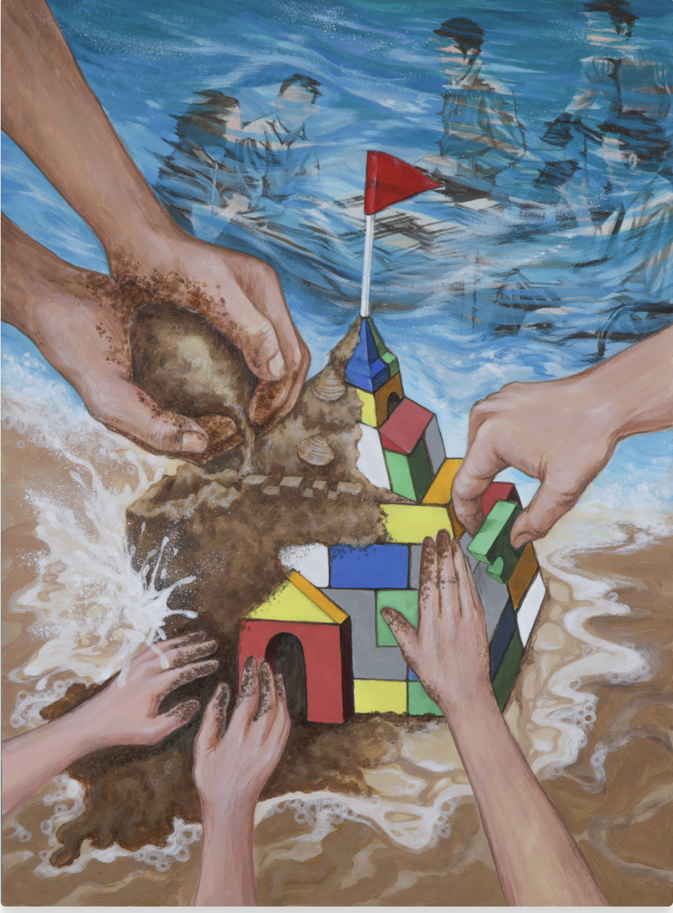

Work
Past Projects
Finished
Shape of Memory

A portfolio art project exploring the themes of memory and adult responsibility, utilizing the striking physical contrast between sand and plastic.
Ongoing

Ocean Awareness Contest
I am working on a series that explores the broken relationship between humans and the ocean. It was inspired by my use of coral-based skincare; I realized the irony in using the ocean to heal myself while our actions are causing coral bleaching. Through my work, I use acrylics and ballpoint pens to bring vibrant colors back to bleached white coral, symbolizing an act of repayment and restoration for what we have destroyed.